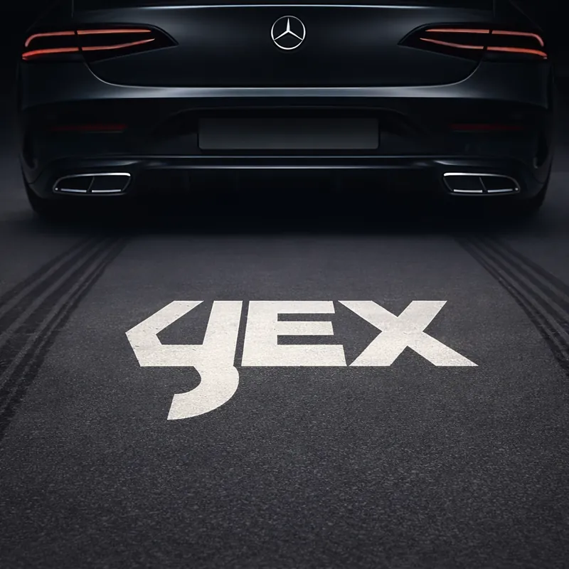
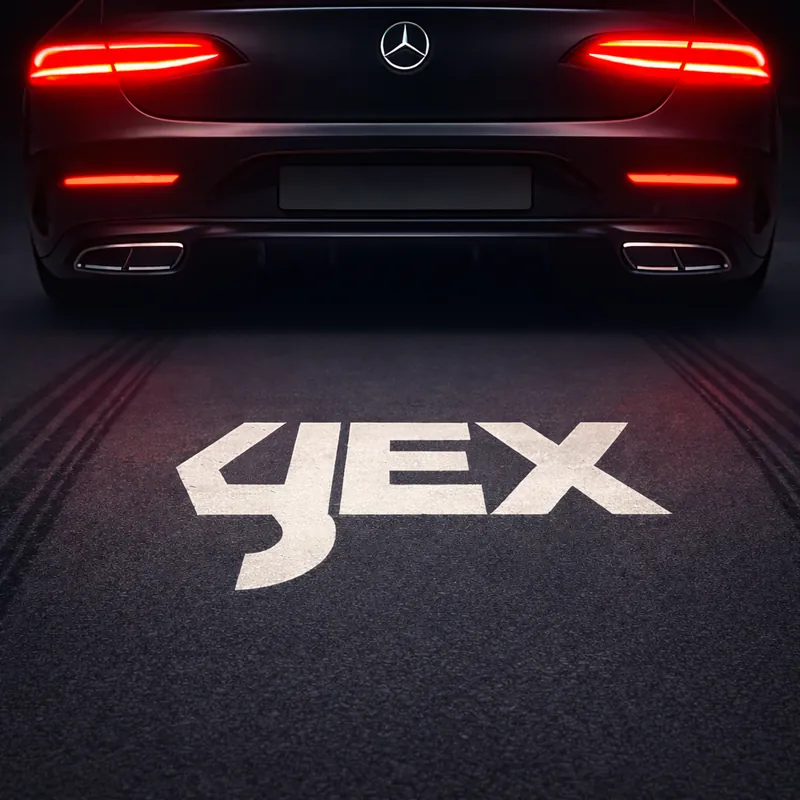
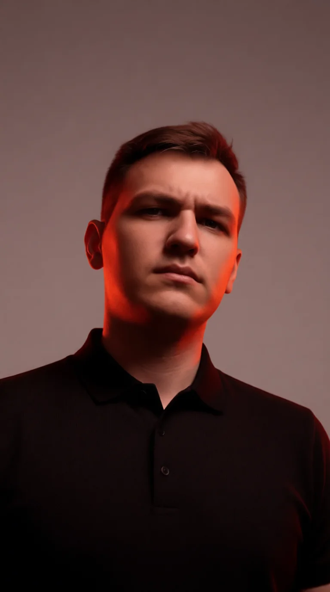
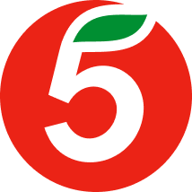

Приложение для онлайн-мероприятия
1 ТЫС
ставок превратились в коктейли

Используем дизайн и технологии как ключевые инструменты для создания готового продукта





рассказываю и показываю
Потяните ползунок вправо или влево